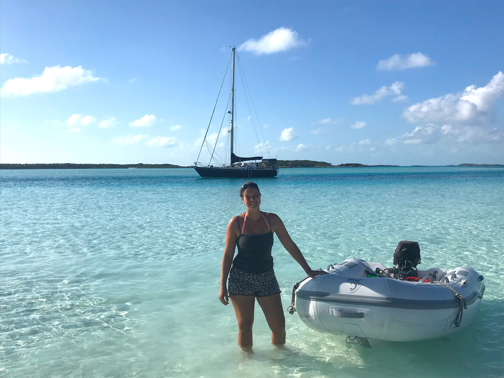
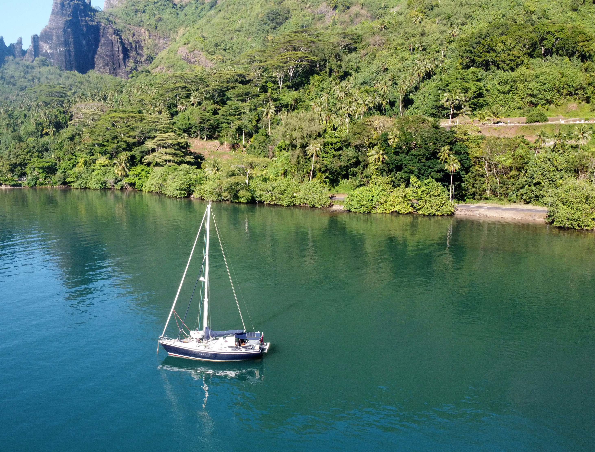
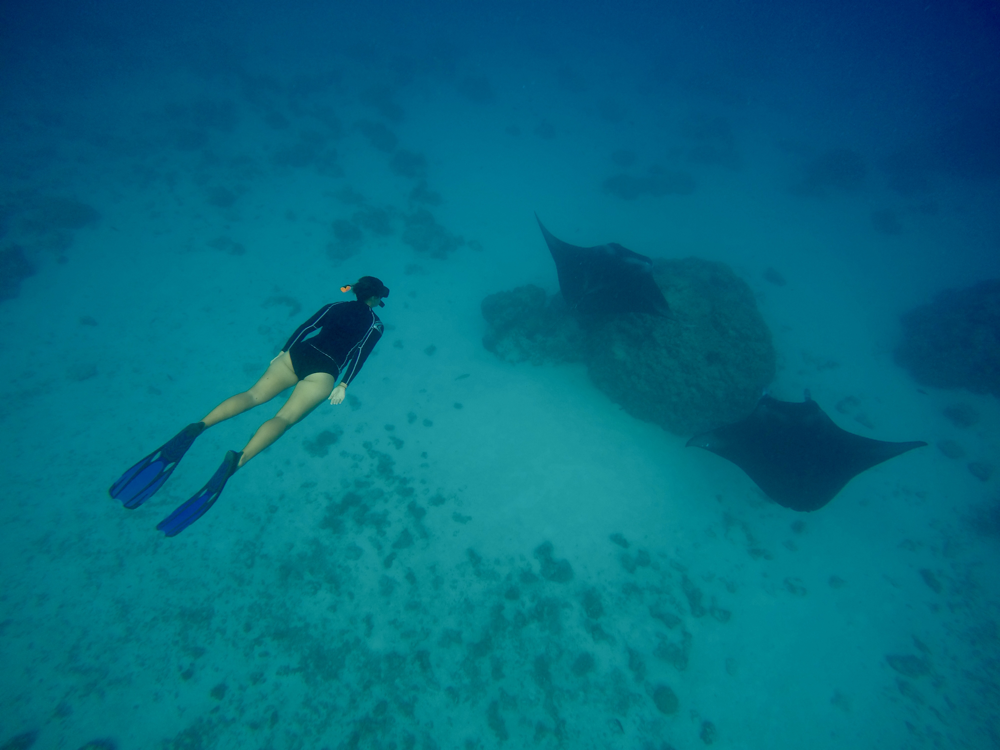
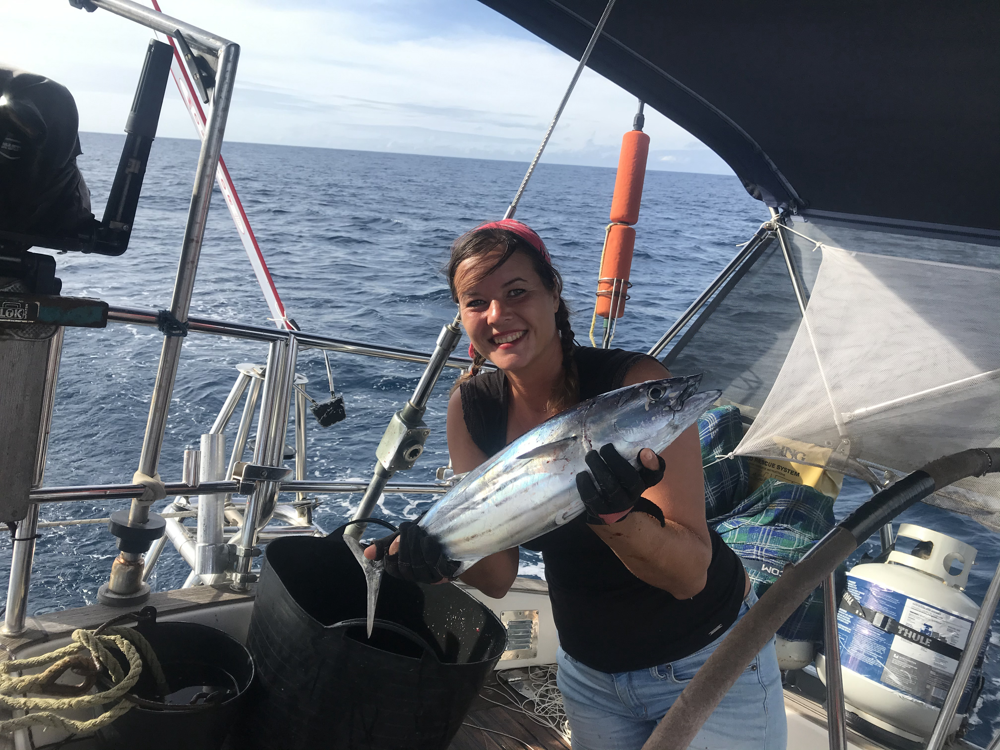
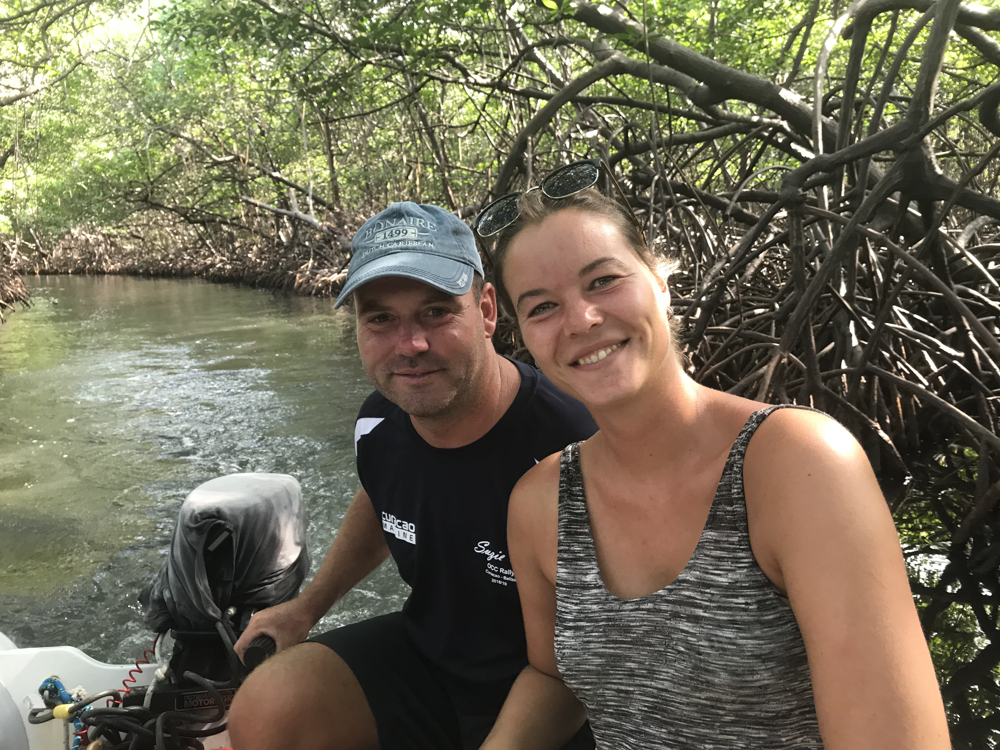
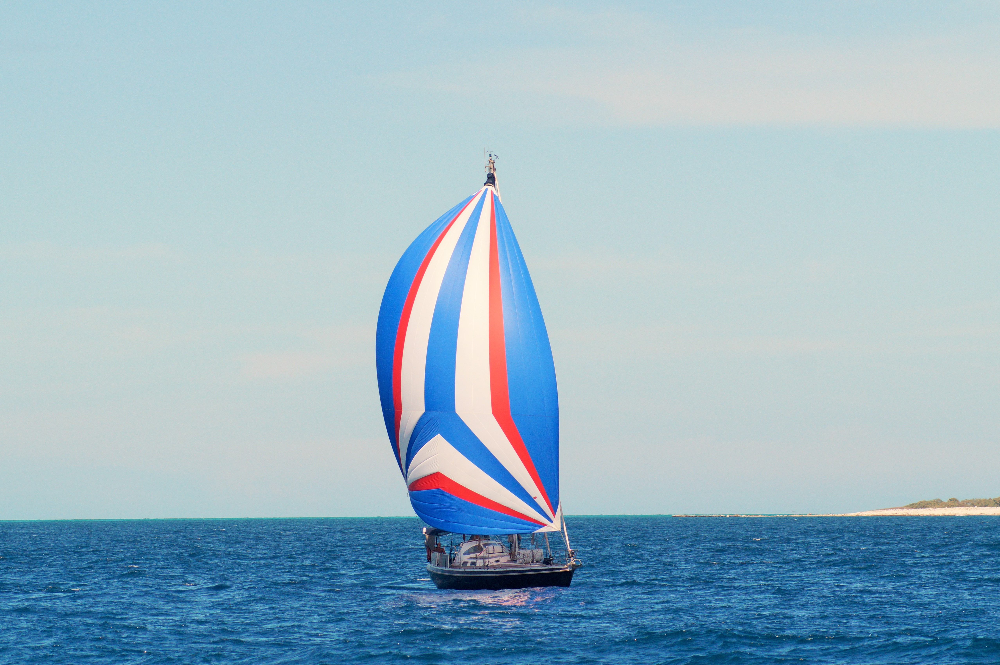
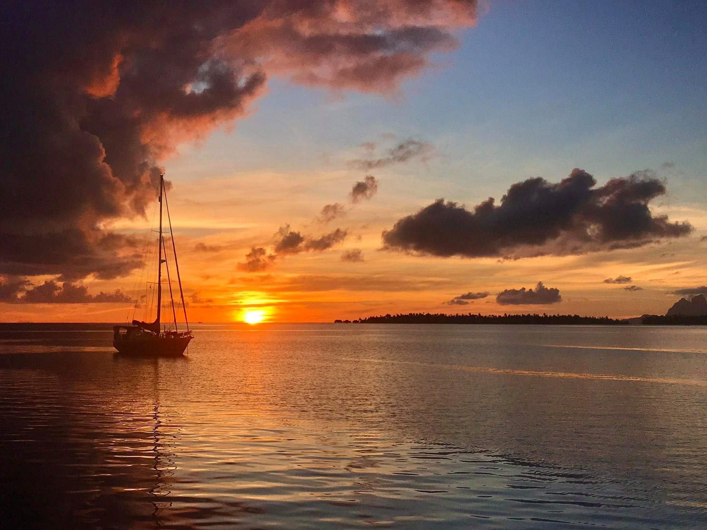
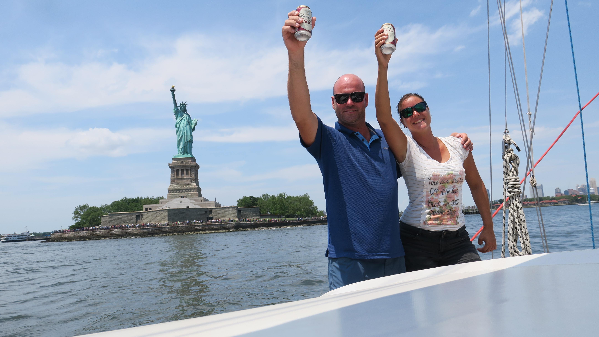
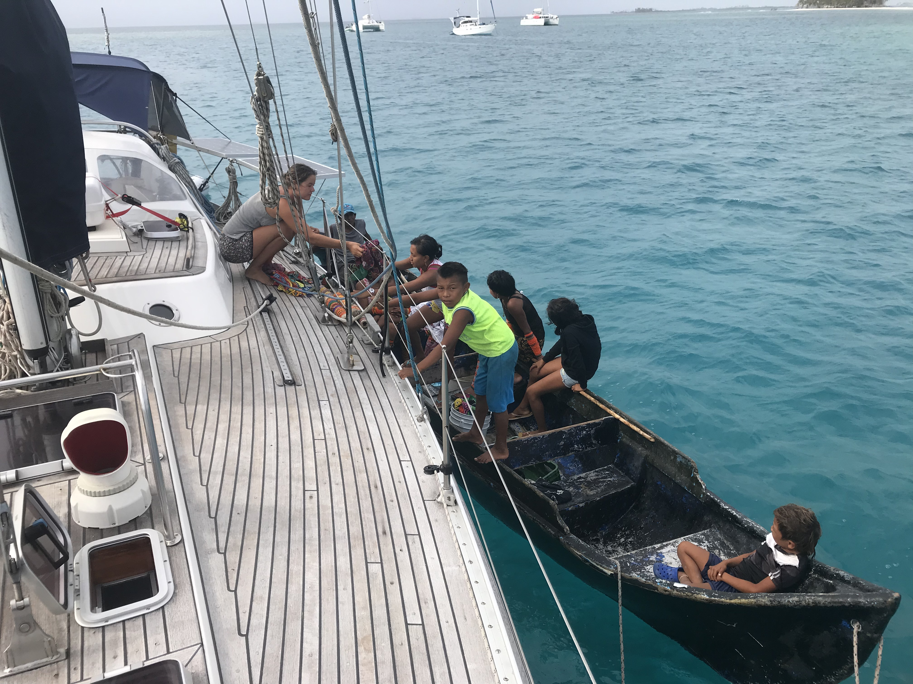

Welkom!
Mijn naam is Sanne Kömhoff. Ik groeide op in het Limburgse dorpje Panningen en ontwikkelde al op vroege leeftijd een liefde voor reizen en avontuur. Met mijn partner Rik zeilde ik in de afgelopen zes jaar rond de wereld. Eenmaal terug in Europa ben ik me gaan focussen op een carrièreswitch naar de IT-sector en volg momenteel een opleiding tot Full stack developer bij de NHA.
Met passie voor creativiteit en oog voor detail
werk ik opdrachten graag uit tot een gebruiksvriendelijk en functioneel geheel.








